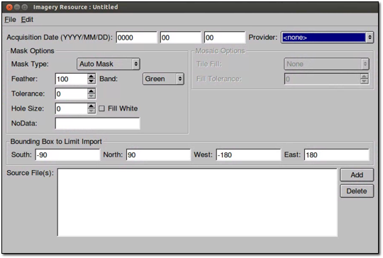

Defining and Building Resources¶
The first step in preparing data is to define resources by importing the source data into Google Earth Enterprise Fusion. You import imagery, terrain, and vector data separately.
This lesson guides you through defining and building imagery, terrain, and vector resources.
Define Imagery Resources
The following exercises guide you through exploring your source data and defining and building imagery resources. Resources comprise the most basic components of a Google Earth Enterprise Fusion database.
Explore Imagery Source Files
In this exercise, you learn to use the Preview panes in the Google Earth Enterprise Fusion GUI to investigate imagery source files to be sure they cover the desired area before you import them into Google Earth Enterprise Fusion.
The following limitations apply to previewing data.
- Certain display rule settings are ignored:
- Simplification method
- Suppress duplicates
- Elevation/height
- Highlight style
- Road label
- Road shield
- Lines and polygons are drawn as lines only (not filled), so use Line Color or Outline Color to see the colors of lines or polygons in the Preview pane.
- Labels appear in the assigned color, but scaling and centering are ignored for labels.
- Icons do appear in the Preview pane, but any style settings (color, scale) are ignored.
- Icons are not selectable, and their pop-up text is not displayed.
To explore imagery source files:
Click the Open
 icon:.
icon:.Select
/opt/google/share/tutorials/fusion/Imagery/usgsLanSat.tifand click Open.The image name appears in the Preview List pane. This is called a layer (an individual source file or resource).
Select the layer’s checkbox.
A bounding box in the Preview pane indicates the extent of the imagery in the selected file.
Right-click the layer in the Preview List pane, and select Zoom to Layer from the context menu.
The Preview pane zooms to show only the region in the selected imagery file.
Repeat the steps above, this time opening the i3SF15-meter.tif file.
When you select the checkbox next to this second layer, a bounding box indicates the extent of the second layer within the first layer. You can see the relationship of each area to the other in the Preview pane.
When you finish viewing the imagery layers, right-click either layer in the Preview List pane, and select Remove All Layers from the context menu.
A message prompts you to confirm that you want to remove all layers from the Preview panes.
Click the OK button.
Press Ctrl+R to reset the view to the whole Earth.
Define Imagery Resources
In this exercise, you create imagery resources from the imagery data provided for this tutorial.
To define an imagery resource:
Select Tools > Asset Manager.
In the Asset Manager, click
 in the
toolbar. The Imagery Resource window appears.
in the
toolbar. The Imagery Resource window appears.
Set the Acquisition Date to today’s date. This is required if you will be creating a historical imagery project later.
The date you set for the imagery Acquisition Date is visible in the Google Earth Client when hovering the cursor over a tile. If you add this information to the imagery at a later point, a rebuild of the imagery project is required (as the date needs to be encoded in the JPEG tiles).
When entering date information, the day or month values can be left blank. For example:
2008-01-00indicates January 20082008-00-00indicates 20080000-00-00indicates undefined
Leading zeros are not required when entering dates.
Note
When you work with real data, the acquisition date should reflect the date the data was released. You can obtain this information from the provider. However, for the purpose of simplifying this tutorial, use the current date for all Acquisition Date fields.
Select NASA Imagery from the Provider drop-down list. Notice that the Provider drop-down list contains all of the providers you added earlier.
Set the Mask Type to No Mask.
You are about to import the BlueMarble source data. Since that data covers the entire world, there is no need for a mask. That is, there is no fill data to mask out in the imagery.
Click Add.
The Open Source dialog opens to the
/opt/google/share/tutorials/fusion/Imageryfolder.Select the
bluemarble_4km.tiffile, and click Open.Select File > Save and navigate to the
/ASSET_ROOT/Resources/Imageryfolder you created in the previous chapter.Enter the name BlueMarble for the resource, and click Save.
Note
Warning
Caution: When you are defining assets for your live production system, it is important to remember that you cannot delete or edit asset names after you save them.
In the Asset Manager, the name of the resource appears on the
right when you select the
/ASSET_ROOT/Resources/Imageryfolder in the asset navigation
tree.
Build an Imagery Resource
Before you can view the imagery resource in the Preview pane or include it in a project, you must build it. You do not have to build each resource right away, however. You can define several resources and then build them all at the same time, if you prefer. There are advantages and disadvantages to both approaches. You can develop your own routine as you get more comfortable with Google Earth Enterprise Fusion.
In this exercise, you will build the first resource right away.
To build an imagery resource:
In the Asset Manager, select the
/ASSET_ROOT/Resources/Imageryfolder.BlueMarble appears on the right with Current Version and Current State set to None, indicating that the resource has not yet been built.
Right-click BlueMarble, and select Build from the context menu. The status of the resource immediately changes to Queued and then to In Progress.
Note
Because imagery files are data-intensive, it can take some time to build imagery resources.
Double-click the Current Version or Current State column for the resource to view the progress of the build.
Right-click BlueMarble, and select Current Version Properties.
The Version Properties dialog displays the most recent version of that resource. You can expand the version tree to view the status of the build in real time by clicking the + signs.
When you are done reviewing the information in the Version Properties dialog, close that window.
When the BlueMarble resource finishes building, its Current State column in the Asset Manager changes to Succeeded, and its Current Version column changes to the date and time the most recent build was started.
Define and Build the Remaining Imagery Resources
Now that you have defined and built one imagery resource, you can define and build the remaining imagery resources provided for this tutorial:
| Name (Resources/Imagery/…) | Acquisition Date | Provider | Mask | Source File |
|---|---|---|---|---|
| SFBayAreaLanSat_20021010 | Today’s date | USGS Imagery |
|
usgsLanSat.tif |
| i3_15Meter_20041010 | Today’s date | i3 | Auto Mask Default values. | i3SF15-meter.tif |
| SFHighResInset_20061010 | Today’s date | USGS Imagery | Auto Mask Default values. | usgsSFHiRes.tif |
While the resources are building, the Asset Manager list looks something like this:
It could take several minutes to build all of the imagery resources. When the builds are all complete, it looks like this:
Preview the Imagery Resources
After you successfully build the imagery resources, you can view some of them in the Preview pane of the Google Earth Enterprise Fusion GUI.
To preview imagery resources:
In the Asset Manager, drag and drop the SFHighResInset resource from the Asset Name column onto the Preview List pane.
Drag and drop the SFBayAreaLanSat resource onto the Preview List pane, and then close the Asset Manager.
Note
Google Earth Enterprise Fusion displays the resources in the order in which they are listed in the Preview List pane with the last asset on the list at the bottom of the stack and the first asset on the list on top. In this case, the SFHighResInset resource provides much higher resolution imagery for a small area of the SFBayAreaLanSat resource, so you want SFHighResInset to appear on top.
Check the box next to each resource in the Preview List pane to display the associated imagery.
Bounding boxes appear where the imagery is located on the base imagery; however, they appear to be very small because the display level is so high.
Right-click SFBayAreaLanSat in the Preview List pane, and select Zoom to Layer from the context menu.
The Preview pane zooms to the outermost edges of the selected layer. Notice the bounding box for the other resource.

Right-click SFHighResInset in the Preview List pane, and select Zoom to Layer from the context menu.
The Preview pane zooms to the outermost edges of the selected layer.

To prepare for the next exercise, zoom out to a display level between 11 and 12 to view more of the San Francisco bay area, as shown in the following graphic.
To zoom out, you can either select and then click in the Preview pane and push the mouse away from you, or roll the mouse wheel away from you.
Define Terrain Resources
Defining terrain resources is very similar to defining imagery resources. The following exercises guide you through defining and building terrain resources.
Explore Terrain Source Files
As with imagery files, you can preview terrain source files to be sure they cover the correct area before you convert them to resources. Although you learned about previewing source files in a previous exercise, this exercise gives you an opportunity to learn about more about the preview tools.
To explore terrain source files:
Click
.The Open dialog appears.
Navigate to the
/opt/google/share/tutorials/fusion/Terrainfolder.Select
SF_terrain.tif, and click Open.
The new layer name appears in the Preview List pane unchecked.
Select Enable All Layers from the Edit menu to check the boxes for all layers.
A bounding box appears for the terrain layer.
Zoom out a bit to see the entire bounding box.
Note
The Preview pane displays a bounding box for terrain source data, not the actual terrain imagery. You must define and build terrain resources to be able to see a preview of the actual terrain.
Right-click SF_terrain, and select Zoom to Layer from the context menu.
This fills the Preview pane with the city of San Francisco. The high-resolution imagery inset, SFHighResInset, is still part of this view, and the SFBayAreaLanSat provides the background imagery.
Use the toolbar buttons and/or your mouse wheel to zoom in and out to explore the terrain on the underlying imagery.
Right-click any layer and select Remove All Layers.
A message prompts you to confirm that you want to remove all layers.
Click the OK button.
All of the layers disappear from the Preview panes. You can leave the preview pane zoomed in to prepare for an upcoming exercise, even though the imagery is too close to make out any details at this point.
Define Terrain Resources
In this exercise, you create terrain resources from the terrain data provided for this tutorial.
To define a terrain resource:
Open the Asset Manager, and click on the toolbar.
The Terrain Resource Editor appears.
Set the acquisition date to today’s date in year-month-day format by clicking each section of the date and enter the values.
Select USGS Terrain from the Provider drop-down list.
Set the Mask Type (under Mask Options) to Have Mask.
The mask file for your import must be located in the same folder as the source file, and the file name must match the name of the source file with
-maskappended. For example, in the tutorial files provided, the source file is calledgtopo30_4km.tif, and its mask file is namedgtopo30_4km-mask.tif. Google Earth Enterprise Fusion automatically applies the mask file by reference to the source file.Note
You can use the Have Mask option for resources that contain one source file only.
Accept the Elevation Units default, Meters.
Click Add.
The Open Source dialog opens to the
/opt/google/share/tutorials/fusion/Terrainfolder.Select gtopo30_4km.tif, and click the Open button.
The selected file appears on the Source File(s) list.
Select Save from the File menu.
The Save dialog appears.
Navigate to the
/ASSET_ROOT/Resources/Terrainfolder you created in Setting Up the Tutorial.Enter the name WorldTopography for the resource, and click Save.
Close the Terrain Resource Editor dialog.
The name of the resource appears on the right when you select the
/ASSET_ROOT/Resources/Terrainfolder in the asset navigation tree in Asset Manager.
To define another terrain resource:
In the Asset Manager, click on the toolbar.
The Terrain Resource Editor appears.
Set the acquisition date to today’s date in year-month-day format by clicking each section of the date and entering the values.
Select USGS Terrain from the Provider drop-down list.
Set the Mask Type (under Mask Options) to Auto Mask, and accept the default mask settings:
- Feather: 100
- Hole Size: 0
- NoData: -99999:0
(For details about masking, see the Mask Options section in the Defining Resources chapter of the Reference Guide.)
Accept the Elevation Units default, Meters.
Click Add.
The Open Source dialog appears.
From the
/opt/google/share/tutorials/fusion/Terrainfolder, select SF_terrain.tif, and click Open.The selected file appears on the Source File(s) list.
Select Save from the File menu.
The Save dialog appears.
Navigate to the
/ASSET_ROOT/Resources/Terrainfolder you created in Setting Up the Tutorial.Enter the name SFTerrain for the resource, and click Save.
Close the Terrain Resource Editor dialog.
The name of the resource appears on the right when you select the
/ASSET_ROOT/Resources/Terrainfolder in the asset navigation tree in Asset Manager.
Build and Modify Terrain Resources
As with imagery resources, in this exercise, you will build the terrain resources right away.
Note
The WorldTopography terrain resource is quite large and could take up to 30 minutes to build, depending on the speed of your CPU. It is a good idea to start this exercise close to lunch time or just before you attend a meeting, so it can build while you are busy doing something else.
To build and modify a terrain resource:
In the Asset Manager, select the
/ASSET_ROOT/Resources/Terrainfolder.The terrain resources appear on the right with the Current Version and the Current State set to None, indicating that the resources have not yet been built.
Right-click WorldTopography, and select Build from the context menu.
The status of the resource changes to Queued and then to In Progress.
Right-click SFTerrain, and select Build from the context menu.
The status of the SFTerrain resource changes to Queued until the WorldTopography resource finishes building and then changes to In Progress.
When each resource finishes building, the Current State column in the Asset Manager changes to Succeeded, and its Current Version column changes to the date and time the most recent build was started.
Drag the SFTerrain resource into the Preview List pane, and check the box next to it.
Right-click SFTerrain, and select Zoom to Layer.
The bounding box for the terrain resource appears in the Preview pane, and the grayscale terrain imagery appears in the bounding box.
Note
Since the Preview pane in Google Earth Enterprise Fusion is meant for preview purposes only, it does not render terrain in 3D like Google Earth EC. Instead, it renders a grayscale interpretation of the terrain. The lighter pixels represent the higher elevations, and the darker pixels represent lower elevations. For this reason, the Preview pane is not useful for comparing elevation values from different resources.
Because the background is a very low-resolution image, it is hard to determine what you are looking at. The solution to this problem is to add high-resolution imagery to the Preview pane to give you a frame of reference.
In the Asset Manager, navigate to
ASSET_ROOT/Resources/Imagery, and drag SFBayAreaLanSat to the Preview List pane, and check the box next to it.The higher-resolution imagery appears under the terrain imagery, so you can get a better idea of where the terrain is located.
The mask automatically generated by Google Earth Enterprise Fusion removes all of the fill data in the terrain resource, using the feather value specified in the Terrain Resource Editor.
The preview shows that the default feather of 100 pixels is far too aggressive, removing much of the terrain data around the coastline. In a real-world situation, you can provide your own mask for the data to be sure you can see every detail around the coastline. For this tutorial, however, simply adjust the feather value for the mask that Google Earth Enterprise Fusion generates automatically.
Double-click the for the SFTerrain resource in the Asset Manager.
The Terrain Resource Editor appears with all of the SFTerrain resource’s settings.
Change the Feather value to 5.
Select Save from the File menu.
Google Earth Enterprise Fusion saves the terrain resource with the same name.
Build the SFTerrain resource again.
Drag and drop the SFTerrain resource onto the Preview List pane.
The new version of the resource appears at the bottom of the list with a number after the resource name to distinguish it from other versions of the same resource.
Uncheck the box next to the original version of the resource, and check the box next to the modified version.
The Preview pane displays the modified version of the resource.
Because the second version of the resource is listed below the imagery resource in the Preview List pane, it appears below the imagery in the Preview pane. Because of the list order, the imagery resource is actually obscuring the terrain resource. All you can see is the mask.
Right-click any layer in the Preview List pane, and select Remove All Layers from the context menu.
A message prompts you to confirm that you want to remove all layers.
Click OK.
All of the layers disappear from the Preview panes.
In the Asset Manager, navigate to
ASSET_ROOT/Resources/Terrain, and drag and drop the new version of the SFTerrain resource onto the Preview List pane, and check the box next to it.Navigate to
ASSET_ROOT/Resources/Imagery, and drag SFBayAreaLanSat to the Preview List pane, and check the box next to it.Now you can see the preview of the terrain over the imagery. With a feather value of 5, the mask removes the fill data but removes much less of the real data, allowing the actual terrain data to be visible out to the edges of the coastline.
When you finish examining the preview, right-click either layer in the Preview List pane, and select Remove All Layers from the context menu.
A message prompts you to confirm that you want to remove all layers.
Click OK.
All of the layers disappear from the Preview panes.
Press Ctrl+R to reset the view to the whole Earth.
Define Vector Resources
The following exercises guide you through the process of defining and building a vector resource for California highway data.
Explore Vector Source Files
As with imagery and terrain files, you can preview vector source files to be sure they provide the data you want before you convert them to resources. This exercise provides an opportunity for you to use some additional preview tools.
To explore vector source files:
Click the
button.The Open dialog appears.
Navigate to the
/opt/google/share/tutorials/fusion/Vectorfolder.Select
california_roads_line.shp, and click Open.The layer name appears in the Preview List pane.
Check the box next to
california_roads_line.The highway and road lines appear on California. (It appears below in bright green; it might appear in a different color on your screen.)
Right-click california_roads_line, and select Zoom to Layer to zoom into the San Francisco Bay area to view the road features.
Make sure the layer is selected (highlighted) in the Preview List pane. Then, with selected on the toolbar, drag a selector rectangle around the City of San Francisco.
The selected area is highlighted (yellow), and the data fields that correspond to the selected area appear in the Data List pane.
You can scroll through this data and sort it by columns to explore the values of each field to determine the potential attributes to use in the filters you set up in Configuring Display Rules.
When you finish exploring the data, right-click the california_roads_line, and select Remove Layer to clear the Preview panes.
A message prompts you to confirm that you want to remove the layer.
Click OK.
The layer disappears from the Preview panes.
Press Ctrl+R to reset the view to the whole Earth.
Define a Vector Resource
In this exercise, you define vector resources from the vector data provided for this tutorial.
To define a vector resource:
Select Asset Manager from the Tools menu.
The Asset Manager appears.
Click on the toolbar.
The Vector Resource Editor appears.
Set the acquisition date to today’s date in year-month-day format by clicking each section of the date and enter the values.
Select USGS Maps from the Provider drop-down list.
Click Add.
The Open Source dialog opens to the
/opt/google/share/tutorials/fusion/Vectorfolder.Select the
california_roads_line.shpfile, and click Open.The selected file appears in the Source File(s) list.
Select Save from the File menu.
The Save dialog appears.
Navigate to the
/ASSET_ROOT/Resources/Vectorfolder you created in Setting Up the Tutorial.Enter the name CAHighways for the resource, and click Save.
Close the Vector Resource Editor dialog.
The name of the resource appears on the right when you select the
/ASSET_ROOT/Resources/Vectorfolder in the asset navigation tree in Asset Manager.
Build a Vector Resource
As with the imagery and terrain resources, in this exercise, you will build the vector resource right away. In fact, you must build vector resources before you can include them in projects.
To build a vector resource:
In the Asset Manager, select the
/ASSET_ROOT/Resources/Vectorfolder.CAHighways appears on the right with the Current Version and the Current State set to None, indicating that the resource has not yet been built.
Right-click CAHighways, and select Build from the context menu.
The status of the resource changes to Queued and then to In Progress. When the CAHighways resource finishes building, its Current State column in the Asset Manager changes to Succeeded, and its Current Version column changes to the date and time the most recent build was started.
Define and Build the Remaining Vector Resources
Now that you have defined and built one vector resource, you can define and build the remaining vector resources provided for this tutorial.
Follow the steps in Defining a Vector Resource to define resources for the following vector source files:
- CAPopPlaces
- Acquisition Date: today’s date
- Provider: USGS POIs
- Source File:
california_popplaces.csv - Name: CA_POIs
- USCensusbyCounty
- Acquisition Date: today’s date
- Provider: GNIS/US Census Bureau
- Source File:
us_counties_census.shp - Name: US_Population
After defining each resource, right-click it and select Build from the context menu. By the time you finish defining the last resource, the other builds should all be complete.
When Google Earth Enterprise Fusion finishes building the last resource, close the Asset Manager by clicking the close box (X) in the top right corner, and go on to the next lesson.